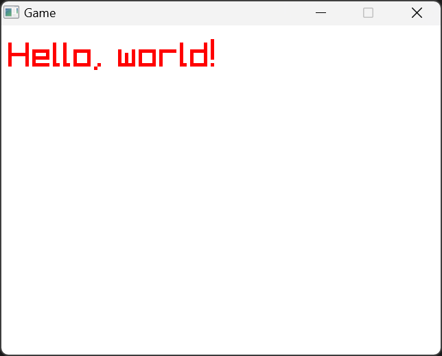

それでは、「raylib.hsp」を実際に使用してみましょう。まず、エントリーポイントとなるHSP3スクリプトファイルを任意のエディタで開いてください。次に、64ビット版HSP3を使用するように「hsp3_64.as」をインクルード、それに続いて「HSPInt64」を使用できるように「hspint64.as」をインクルードし、その後に「raylib.hsp」をインクルードしてください。
ここまで入力したスクリプトは、ここからは省略させていただきます。
このまま実行しても何も表示されませんので、
例としてraylibのウィンドウを表示させてからそのウィンドウ内に「Hello, world!」と文字を描画させてみます。以下のスクリプトを入力してください。もちろんコメントの部分は入力しなくても大丈夫です。
実行に成功すると、以下のようなウィンドウが表示されるはずです。
